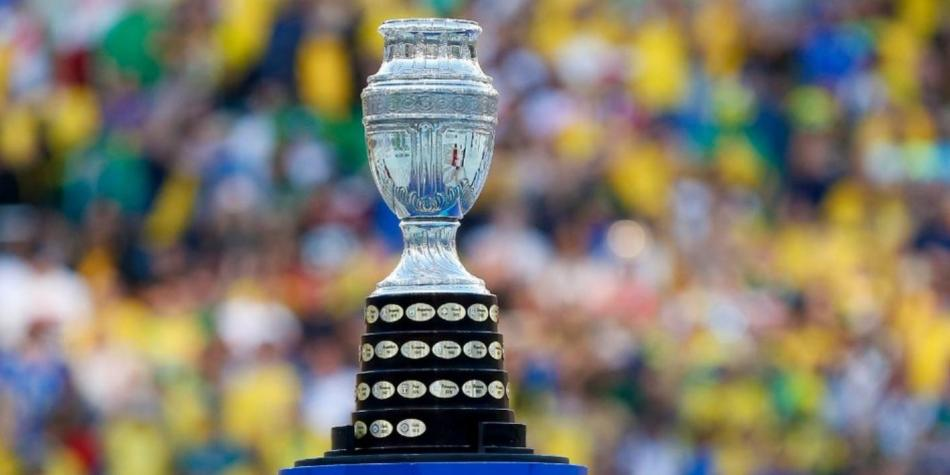
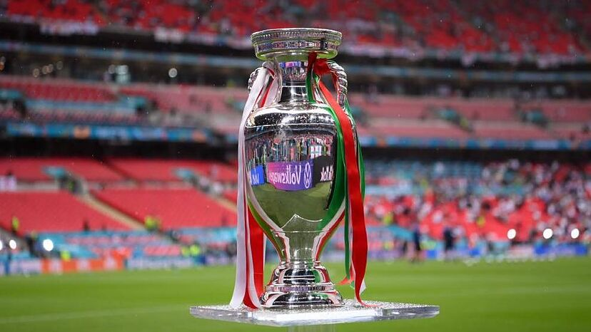

Copa América 2024: con sedes y calendario definido, Argentina jugará el partido inaugural
Serán 16 equipos divididos en cuatro zonas. Los dos primeros de cada una se meterán en cuartos de final. Los cuatro cabezas de serie sí están confirmados: Argentina, México, Estados Unidos y Brasil.
Leer más

Eurocopa 2024: ¿Cómo quedaron los grupos tras el sorteo y cuál es el calendario?
Ya están definidos los grupos de la Eurocopa 2024, a disputarse en Alemania. El sorteo se realizó en la ciudad de Hamburgo y trabajadores del puerto de la ciudad realizaron la presentación de los grupos de forma simultánea utilizando contenedores.
Leer más